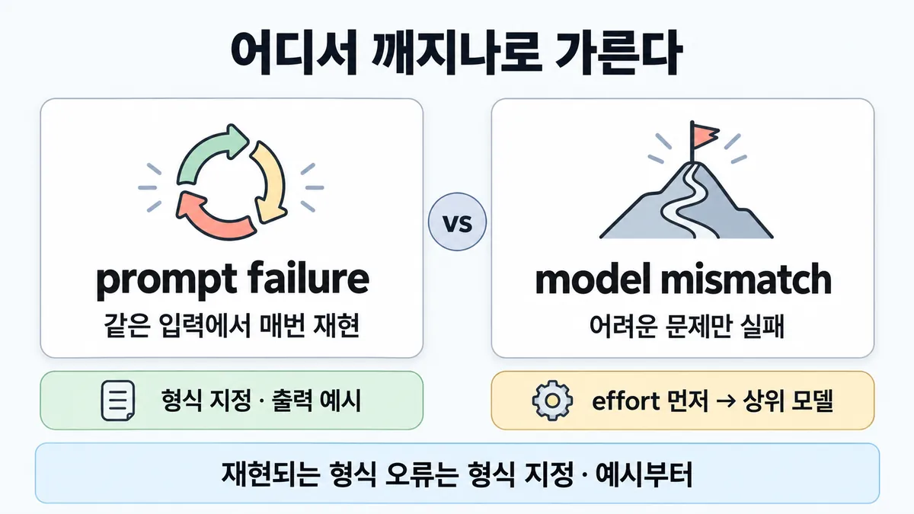
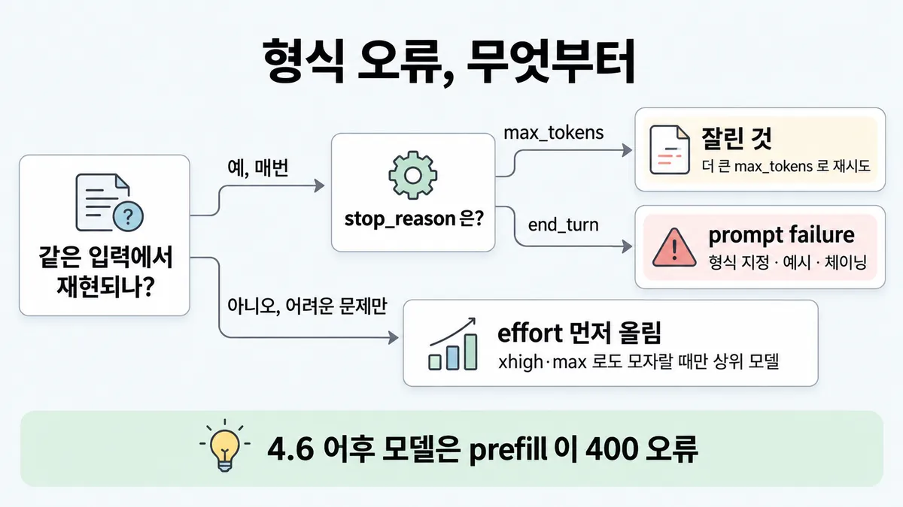
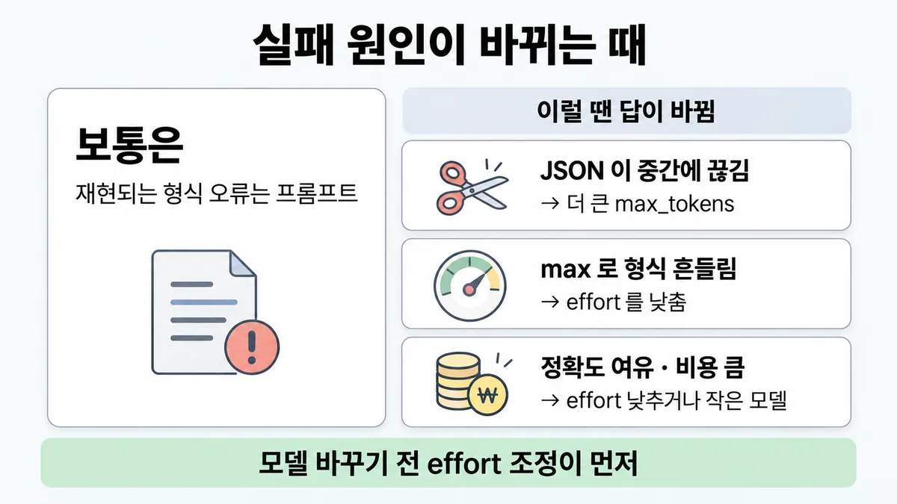

◆ prompt failure vs model mismatch
표시가 없는 문장은 공식 문서에서 확인한 내용이에요. 다른 표시는 읽는 법
왜 배우나 — 시험이 요구하는 것
시험 목표 4.4 문제 진단 · D4 평가 16%Diagnose system issues (prompt failure, hallucinations, model mismatch)
이 개념으로 푸는 판단 (할 수 있어야 하는 것)
- 4.4③ 형식이 매번 깨진다 vs 더 강한 설정에서만 풀린다 — prompt failure vs model mismatch 가르기
- 2.1② 품질이 조금 모자라거나 비용이 남는다 — 모델을 바꿀까, effort 를 바꿀까? — 조절 수단 순서 (effort → 모델 교체 → 섞인 요청은 모델 조합·라우팅)
- 3.3① 상담원이 "답 초안이 늦게 뜬다"고 한다 — 모델부터 바꾸나? — 지연 lever 고르기 (스트리밍 · 캐싱 · 출력 길이 · effort · 모델 교체)
- 6.2① 실행 가능한 설계가 둘 — 아키텍트가 골라 통보할까, 책임자가 고르게 할까? — 절충 전달 방식 (평가 근거 붙은 선택지 공개 → 책임자 결정)
한눈에


ELI5
심부름을 시켰는데 일이 잘못됐어요.
- 매번 같은 곳에서 틀린다면, 내 설명이 헷갈렸던 거예요. 설명을 고쳐요.
- 쉬운 건 잘하는데 어려운 것만 틀린다면, 먼저 "천천히 잘 생각해" 하고 시간을 더 줘요.
- 시간을 충분히 줘도 못 한다면, 그때 더 잘하는 사람에게 맡겨요.
- 종이가 모자라 중간에 멈췄다면, 설명도 사람도 아니고 종이를 더 줘요.
개념 설명
원리
세 층의 lever(조절 수단)
- 프롬프트(지시·형식·예시) → 모델 안 lever(effort) → 모델 자체(교체). 앞의 것이 싸고 빠름.
- 공식 순서 : 모델 바꾸기 전 effort 조정이 흔히 더 나은 lever. xhigh·max 로도 eval 이 모자랄 때만 상위 모델. 업그레이드는 특정 능력 격차가 있을 때만.
prompt failure(프롬프트 실패)의 모양
- 같은 입력에서 같은 식으로 깨짐 = 지시·형식이 모자란 것 (재현된다는 판별 틀은 업계 일반).
- 대책 : 출력 형식 정확히 지정 · 원하는 출력 예시(추상 지시보다 효과적) · 복잡하면 체이닝.
- 형식 보장이 필요하면 structured outputs — 제약된 디코딩으로 필수 필드·타입까지 보장. 공식 스스로 "잘 짠 프롬프트로도 필수 필드 누락은 생길 수 있다"고 함 → 프롬프트만으로 100% 는 아님.
model mismatch(모델 부적합)의 모양
- 문맥·프롬프트가 맞는데 어려운 문제만 틀림 = 추론(reasoning) 양·능력이 모자람.
- Opus 4.7 안내 : 얕은 추론이면 프롬프트로 우회하지 말고 effort 를 올림.
- 반대 mismatch : 쉬운 일에 너무 큰 모델·높은 effort = 비용·지연(latency) 낭비. max 는 구조화 출력에서 과도한 thinking(사고)으로 이어질 수도 있음.
둘 다 아닌 것
- 끊긴 JSON(
stop_reason: "max_tokens") = 출력 한도. 형식·모델 문제가 아님. - prefill 400 = 4.6 이후 모델이 prefill 을 안 받는 것. 형식 대책이 막힌 것이지 모델 능력 문제가 아님.
규칙과 판단


갈림길
어디서 깨지나 [4.4③]
stop_reason 은?max_tokens
잘린 것
형식 실패 아님 → 더 큰 max_tokens 로 재시도
end_turn
prompt failure
출력 형식을 정확히 지정 · 원하는 출력 예시 · 복잡하면 체이닝
다음 물음 — 지금 effort 는?
모델 쪽 lever [4.4③] [2.1②]
effort 올림
모델 바꾸기 전 effort 조정이 흔히 더 나은 lever(조절 수단)
상위 모델
xhigh·max 로도 모자랄 때만 상위 모델(Fable 5.1)
max 는 가장 어려운 문제용
대부분은 품질 이득이 작은데 비용만 크게 늘고, 구조화 출력에선 과도한 thinking(overthinking)으로 이어질 수 있음
형식 고정 수단 [4.4③]
prefill 금지
structured outputs · 시스템 프롬프트 지시 · output_config.format
prefill 도 됨
이전 모델은 prefill 계속 지원. 단 JSON outputs 와는 같이 못 씀
흐름
그림 속 이름·금액·시간·토큰 수는 예시예요. 공식 한도·동작은 카드 본문 값이 기준.
장면 글로 보기
칸 : 앱 → 모델 → 출력
질문 : 같은 입력이면 매번 같은 자리에서 깨질까?
① 같은 입력에서 매번 깨짐 → 프롬프트 ✓
- 시작 : 앱 — 쪽지 : 주문 메일 #4821 / "JSON 으로 뽑아 줘"
- 요청 : 앱 → 모델 : 같은 입력 — 쪽지 : 같은 메일 #4821 / 5번째 요청
- 출력 : 모델 → 출력 : 필수 필드 누락이 매번 — 쪽지 : {"order_id":"4821"} / delivery_date 없음 / stop_reason : end_turn
- 고침 : 앱 : 출력 형식 지정 · 원하는 출력 예시 — 쪽지 : 형식 : order_id, / delivery_date 필수 / + 출력 예시 1개
- 요청 : 앱 → 모델 : 형식을 정한 요청 — 쪽지 : 같은 메일 #4821 / + 형식 · 예시
- 출력 : 모델 → 출력 : 필드가 다 채워짐 — 쪽지 : {"order_id":"4821", / "delivery_date": / "10-02"}
- 끝 : 같은 입력에서 매번 재현되는 형식 오류 = prompt failure — 모델 교체 아님
② 어려운 문제만 실패 → effort 먼저 ✓
- 시작 : 앱 — 쪽지 : 환불 + 교환 + 쿠폰이 / 겹친 어려운 문의만 틀림
- 요청 : 앱 → 모델 : 문맥·프롬프트는 맞음 — 쪽지 : 문맥 · 프롬프트 OK / effort : 기본값
- 올림 : 모델 : effort 를 올림 — 쪽지 : effort 를 올려 / eval 다시 (xhigh·max 까지)
- 출력 : 모델 → 출력 : eval 로 다시 측정 — 쪽지 : 어려운 문의 eval / effort 올린 뒤 재측정
- 끝 : effort 를 올려도(xhigh·max) eval 이 모자랄 때만 상위 모델
③ prefill 로 형식 고정 ≠
- 시작 : 앱 — 쪽지 : 주문 메일 #4821 / "JSON 으로 뽑아 줘"
- 요청 : 앱 → 모델 : 마지막 assistant 턴 prefill — 쪽지 : messages 끝 : / role : "assistant" / content : "{"
- 거절 : 모델 → 앱 : 4.6 이후 모델은 거절 — 쪽지 : 400 / invalid_request_error
- 끝 : 4.6 이후 모델은 prefill 을 안 받음 → structured outputs · 시스템 프롬프트 지시 ·
output_config.format
반복
같은 주문 메일을 5번 보내 보기
- ① 형식 지정 없음 — 5번 모두 같은 필드 누락 — 매번 재현 ≠
- ② structured outputs — 5번 모두 필수 필드 있음 ✓
가정① 은 그림용 가정 — 형식을 안 정한 프롬프트가 같은 필드를 늘 빠뜨린다고 봄. 실제 측정값 아님
규칙 원문 갈림 기준 (갈림길로 그린 규칙)
갈림 기준
같은 입력에서 재현되나, 더 강한 설정에서만 풀리나
- 같은 입력에서 매번 재현되는 형식 오류 → prompt failure(프롬프트 실패) : 출력 형식을 JSON·XML·템플릿으로 정확히 지정 · 원하는 출력 예시(추상 지시보다 효과적) · 복잡하면 작은 하위 작업으로 체이닝
- 지원 모델이면 structured outputs(
output_config.format·strict: true) → 필수 필드·타입까지 보장. 잘 짠 프롬프트로도 필수 필드 누락은 생길 수 있음 - JSON 이 중간에 끊김(
stop_reason: "max_tokens") → 형식 실패 아님. 더 큰max_tokens로 재시도 → ■ stop_reason 으로 분기 · ■ max_tokens 와 긴 출력 - prefill 은 형식 대책 아님 : 4.6 이후 모델은 마지막 assistant 턴 prefill 이 400
invalid_request_error. 대신 structured outputs · 시스템 프롬프트 지시 ·output_config.format - 이전 모델은 prefill 계속 지원. 단 JSON outputs 와는 같이 못 씀
- 문맥·프롬프트가 맞는데 어려운 문제만 실패 → model mismatch(모델 부적합) 후보. 모델 바꾸기 전 effort 조정이 흔히 더 나은 lever
- 복잡한 문제에 얕은 추론(reasoning)이면 프롬프트로 우회하지 말고 effort 를 올림 (Opus 4.7 안내)
- xhigh·max 로도 eval 이 모자랄 때만 상위 모델(Fable 5.1)
- max 는 가장 어려운 문제용. 대부분 작은 품질 이득에 비용만 크게 늘고, 구조화 출력에선 과도한 thinking(overthinking)으로 이어질 수 있음
- 반대 방향 model mismatch(너무 큰 모델) : eval 이 품질 유지를 보이면 effort 를 낮추거나 모델을 내림 → ■ 지연 줄이기 lever
- 바꿀지는 내 실제 프롬프트·데이터로 만든 벤치마크 eval 로 비교 — 좋은 eval 셋이 가장 중요한 단계. 업그레이드는 특정 능력 격차가 있을 때만 → ■ 첫 eval 셋 만들기
- "더 강한 모델·effort 에서만 풀리면 model mismatch" 이라는 판별 틀 자체 업계 일반 공식 문장 없음
더 깊이 : 판단 규칙 · 상황 변수 (설명)
판단 규칙
| 조건 | 답 | 등급 | 근거 |
|---|---|---|---|
| 같은 입력에서 형식 오류가 매번 재현 | 형식 정확히 지정 · 예시 · 체이닝 | (재현 판별 틀은 업계 일반) | increase-consistency |
| 필수 필드·타입이 꼭 맞아야 함 | structured outputs (output_config.format · strict: true) | structured-outputs | |
| JSON 이 중간에 끊김 | stop_reason: "max_tokens" → 더 큰 max_tokens | structured-outputs | |
| 4.6 이후 모델에 prefill | 400 invalid_request_error → structured outputs · 시스템 프롬프트 · output_config.format | errors · prompting-best-practices | |
| 문맥·프롬프트는 맞는데 어려운 문제만 실패 | effort 먼저 | choosing-a-model | |
| 복잡한 문제에 얕은 추론 (Opus 4.7) | 프롬프트로 우회 말고 effort 올림 | effort | |
| xhigh·max 로도 eval 이 모자람 | 상위 모델 (Fable 5.1) | choosing-a-model | |
| max 를 기본값으로 | 가장 어려운 문제용. 대부분 작은 이득에 큰 비용 | effort | |
| 모델을 바꿀지 판단 | 실제 프롬프트·데이터로 만든 벤치마크 eval 로 비교 | choosing-a-model | |
| eval 이 낮은 설정에서도 품질 유지 | effort 낮추기 · 모델 내리기 | choosing-a-model · effort |
상황 변수
| 변수 | 값 | 답 쪽 | 등급 | 근거 |
|---|---|---|---|---|
| 재현성 | 같은 입력에서 매번 | 프롬프트 | 업계 일반 | 목록 4.4③ 틀 · 공식 문장 없음 |
| 재현성 | 어려운 입력에서만 | effort → 모델 | choosing-a-model | |
stop_reason | max_tokens | 출력 한도 | structured-outputs | |
| 모델 세대 | 4.6 이후 | prefill 400 | errors | |
| 모델 세대 | 4.6 이전 | prefill 됨 (JSON outputs 와는 같이 못 씀) | prompting-best-practices · structured-outputs | |
| effort 지정 | 생략 + Opus 5.5 | medium 으로 돎 | (시험 뒤 변경) | effort |
| effort 지정 | 생략 + 그 밖의 effort 지원 모델 | high 로 돎 | effort | |
| 과제 | 구조화 출력 · 지능 덜 드는 일 | max 는 과도한 thinking 위험 | effort (Opus 4.7 표) | |
| 과제 | 30분 넘는 에이전트·코딩 작업 | xhigh 쪽 | effort | |
| 지연 제약 | effort 를 못 올림 | 목표 지향 문구 추가 ("This task involves multistep reasoning...") | effort |
연습 문제
주문 확인 메일에서 JSON 을 뽑는데, 같은 메일을 넣으면 매번매번 재현 delivery_date 필드가 빠진다. 응답은 stop_reason: "end_turn" 으로 끝난다끝까지 씀. 팀원은 더 큰 모델로 바꾸자고 한다. 먼저 할 일은?
시험 대비
함정
- "가장 큰 모델 + effort max 를 기본값으로" → max 는 가장 어려운 문제용, 대부분 비용만 크게 늚
- "prefill 로 형식 고정" → 4.6 이후 모델은 400
- 형식이 매번 깨지는데 모델부터 교체 → 업그레이드는 특정 능력 격차가 있을 때만. 재현되는 형식 오류는 형식 지정·예시부터
- JSON 끊김을 프롬프트 탓으로 →
stop_reason: "max_tokens", 더 큰max_tokens - 얕은 추론에 "생각 깊게 하라"는 문구만 덧댐 → effort 를 올림(지연(latency) 때문에 낮게 둬야 할 때만 문구 추가)
- 모델을 옮긴 뒤 얕아짐을 "모델이 약함"으로 → effort 기본값부터 → ■ 변경부터 묻는 진단
- increase-consistency 문서는 지금도 "Prefill Claude's response" 를 권함 → 4.6 이후 모델엔 안 맞음. 오류·프롬프팅 문서가 400 이라 함
- Skilljar API 강의(2025 제작 추정) "prefill + stop sequence 로 깨끗한 JSON" → 4.6 이후 모델은 400
신호
"Provide examples of your desired output. This is more effective than abstract instructions."
"Tuning effort is often a better lever than switching models."
"If you observe shallow reasoning on complex problems with Claude Opus 4.7, raise effort rather than prompting around it."
"Reserve for frontier problems. On most workloads max adds significant cost for relatively small quality gains"
"Sending a request with a prefilled last assistant message to any of these models returns a 400 invalid_request_error"
"Retry with a higher max_tokens value to get the complete structured output"
"Upgrade only if necessary for specific capability gaps."


더 깊이 : 뒤집히는 때 · 오답 재료 (설명)
뒤집히는 때
1. 형식이 매번 깨지는데 프롬프트 탓이 아닌 때 — 출력 한도
- 조건 : 주문 150건을 JSON 배열로 뽑음. 항목당 약 35 토큰.
max_tokens는 4,096. - 계산 : 150 × 35 = 5,250 토큰 > 4,096 → 매번 같은 자리에서 끊김. 같은 입력에서 재현되니 prompt failure 처럼 보임.
- 판단 :
stop_reason이max_tokens면 한도 문제. 더 큰max_tokens로 재시도(또는 나눠 요청). - 전제 : 항목당 토큰은 예시 가정값. 새 토크나이저 모델이면 약 30% 더 → 한도를 더 일찍 넘음.
- 등급 : 계산 (처방은 확인)
- 근거 : structured-outputs · pricing
2. effort 를 올렸더니 형식이 오히려 흔들리는 때
- 조건 : 단순 분류를 구조화 출력으로 받는데 "품질을 위해" max 로 올림.
- 판단 : max 는 구조화 출력·지능이 덜 드는 일에서 과도한 thinking 으로 이어질 수 있다는 게 공식(Opus 4.7 표). 올리는 게 답이 아니라 낮추는 쪽.
- 등급 : (Opus 4.7 표 문장 — 다른 모델에 같은 문장은 없음)
- 근거 : effort
3. "모델이 약하다"가 사실은 기본값인 때
- 조건 : Opus 5 에서 통과하던 긴 다단계 추론이 Opus 5.5 로 옮긴 뒤 실패. 요청에 effort 없음.
- 판단 : Opus 5.5 기본값은 medium → 한 단계 낮게 돎. model mismatch 전에 effort 를 올려 다시 측정. 이전 설정을 들고 오지 말고 effort 를 다시 훑어봄.
- 등급 : · 시험 뒤 변경 (2026-09-22) → ■ 변경부터 묻는 진단
- 근거 : effort
4. prefill 이 아직 맞는 답인 때
- 조건 : 4.6 이전 모델(예 Haiku 4.5)을 쓰는 옛 시스템, JSON outputs 는 안 씀.
- 판단 : 이전 모델은 prefill 을 계속 지원 → "prefill 은 항상 오답"은 아님. 단 JSON outputs 와는 같이 못 씀. 시험 보기가 모델을 안 밝히면 4.6 이후 기준(400)이 안전(추론).
- 등급 : (지원 여부) · 추론 (시험 기준)
- 근거 : prompting-best-practices · structured-outputs
5. model mismatch 가 "너무 큰" 쪽인 때
- 조건 : 하루 12만 건 짧은 문의 분류를 Opus 로 돌려 지연·비용이 큼. 정확도는 여유.
- 판단 : mismatch 는 더 큰 모델 쪽으로만이 아님. eval 로 품질 유지를 확인하며 effort 를 낮추거나 더 작은 모델로 → ■ 지연 줄이기 lever.
- 근거 : choosing-a-model
오답 재료
| 오답 | 왜 끌리나 | 왜 틀리나 | 근거 |
|---|---|---|---|
| "가장 큰 모델 + effort max 를 기본값으로" | 최고 설정이면 안전해 보임 | max 는 가장 어려운 문제용, 대부분 작은 이득에 큰 비용 · 과도한 thinking | effort (목록 4.4③ 매력적인 오답) |
| "prefill 로 형식 고정" | 옛 강의·옛 문서의 기법 | 4.6 이후 모델은 400 | errors · Skilljar 287732(옛 기법) |
| 재현되는 형식 오류에 "더 큰 모델" | 큰 모델이 형식도 잘 지킬 것 같음 | 업그레이드는 특정 능력 격차가 있을 때만. 형식 지정·예시·structured outputs 가 먼저 | choosing-a-model · increase-consistency |
| 끊긴 JSON 에 "형식 예시를 더 넣음" | 형식 문제처럼 보임 | max_tokens 한도. 예시를 넣으면 입력만 늘어남 | structured-outputs |
| 얕은 추론에 "더 생각하라는 문구만 추가" | 프롬프트 수정이 싸 보임 | Opus 4.7 안내는 effort 를 올림. 문구는 지연 때문에 effort 를 못 올릴 때 | effort |
| "effort 로 안 되면 곧바로 모델 교체" | 빠른 해결 | xhigh·max 까지 eval 로 확인한 뒤 | choosing-a-model |
| "abstract 지시를 더 길게 쓰면 된다" | 설명을 늘리면 알아들을 것 같음 | 예시가 추상 지시보다 효과적 | increase-consistency |
참고
개념
출처
- 가이드 목표 4.4 공식 시험 가이드 v1.0
- docs increase-consistency
- structured-outputs
- errors
- prompting-best-practices
- choosing-a-model
- effort
- 릴리스 노트
- Skilljar API 287732
상태
- 업계 일반 1줄(판별 틀)
미해결
- increase-consistency 문서(2026-09-28 받은 판)는 지금도 "Prefill Claude's response" 를 권함 — errors·prompting-best-practices 문서의 "4.6 이후 400" 과 어긋남. 문서끼리 어긋나는 채로 둠, 카드는 400 쪽을 따름.
- 목록 4.4③ 의 "더 강한 tier 에서만 되면 model mismatch" 판별 틀은 영상의 틀 — 공식 문장 없음(카드에 업계 일반으로 표시).
- structured outputs 지원 모델 목록 원문(모델별 표)은 확인하지 않음 — "지원 모델이면"으로만 씀.
- 목록 4.4③ 의 "prefill 은 4.6 이후 모델에서 400" 은 원문과 같음(errors) ✓. 목록의 effort 기본값 "대부분 high, Opus 5.5 는 medium (2026-09-27 조회)" 도 effort과 같음.